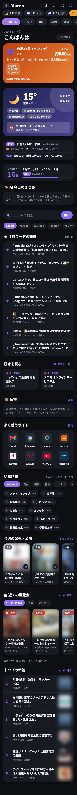
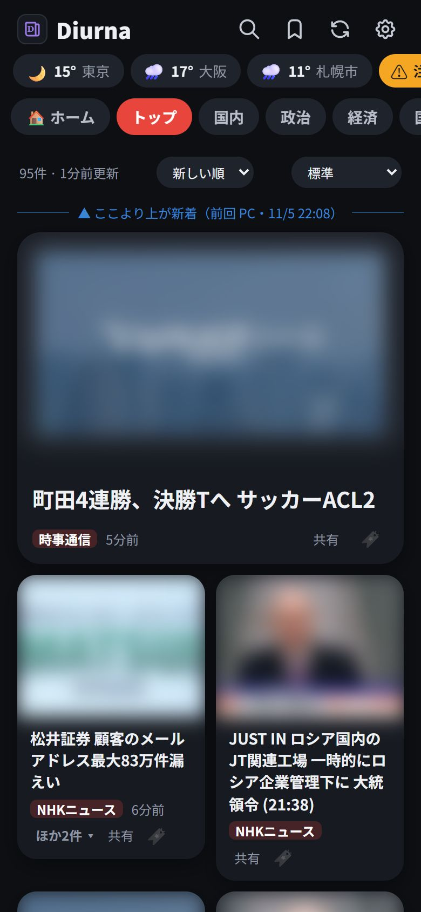
いろいろなニュースサイトの記事を、ジャンル別のタブで読めます。毎日見たい情報もホームにまとまっていて、iPhone・iPad・PC のどれからでも同じ設定で使えます。
天気・暦・連休・AI のまとめ・話題のキーワード・発売日などを1画面に。
好きなサイトを入れたタブを、横にスワイプして読みます。
3か所まで。3時間ごと・週間・服装の目安・雨雲レーダー。
気象庁の警報・注意報と地震。上の帯でいつでも分かります。
よく乗る路線を3つまで。遅れや見合わせがひと目で分かります。
朝のまとめ・電車の遅れ・雨・警報を、メールやプッシュ通知で。
記事を3行に。ホームでは今日のニュースのまとめも。
気になる記事を取っておけます。全タブの記事から探せます。
端末ごとに1回だけ、ホーム画面（PC はアプリ）に追加して、合言葉を入れます。2台目からは、使っている端末から送るリンクを開くだけです。
ホーム画面のアプリは Safari と保存場所が別です。合言葉は、ホーム画面から開いたほうで入れてください。プッシュ通知も、ホーム画面から開いたときだけ使えます。
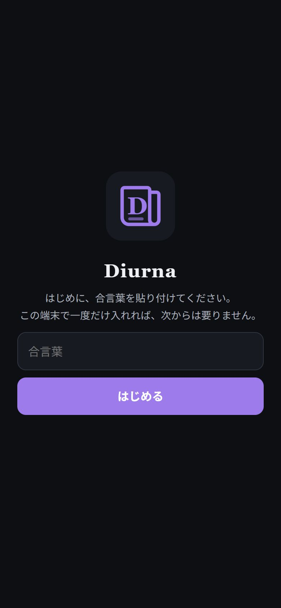
上の帯には、天気・警報・電車の状態がいつも出ています。押すと、それぞれの詳しいページが開きます。右上のボタンは左から 検索 あとで読む 更新 ⚙︎ 設定 です。
タブの並びの先頭が「ホーム」です。左の写真は、指（マウスのホイール）で下へ動かせます。
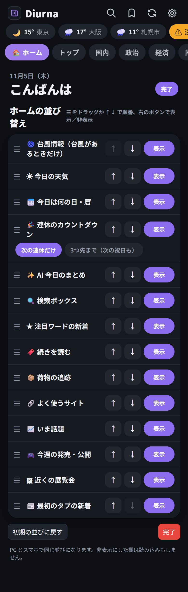
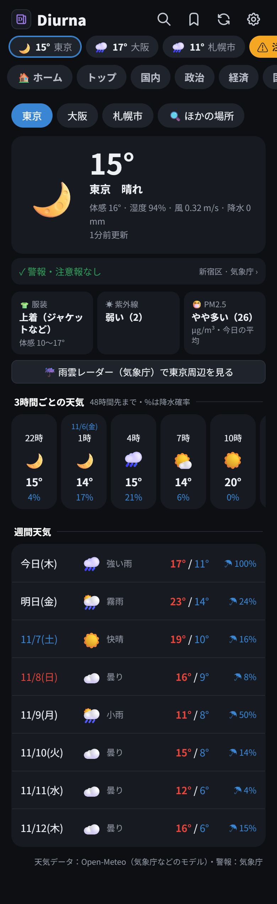
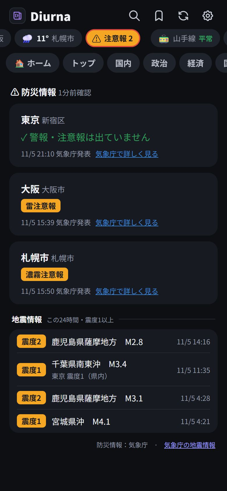
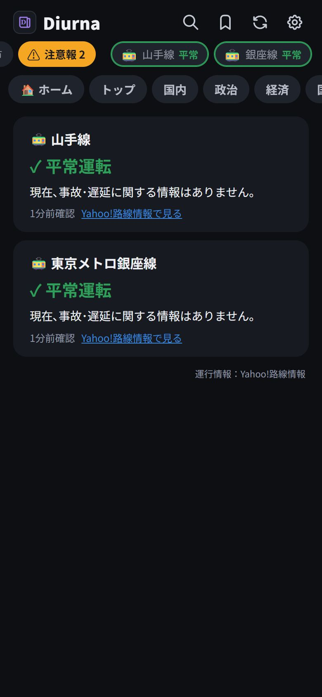
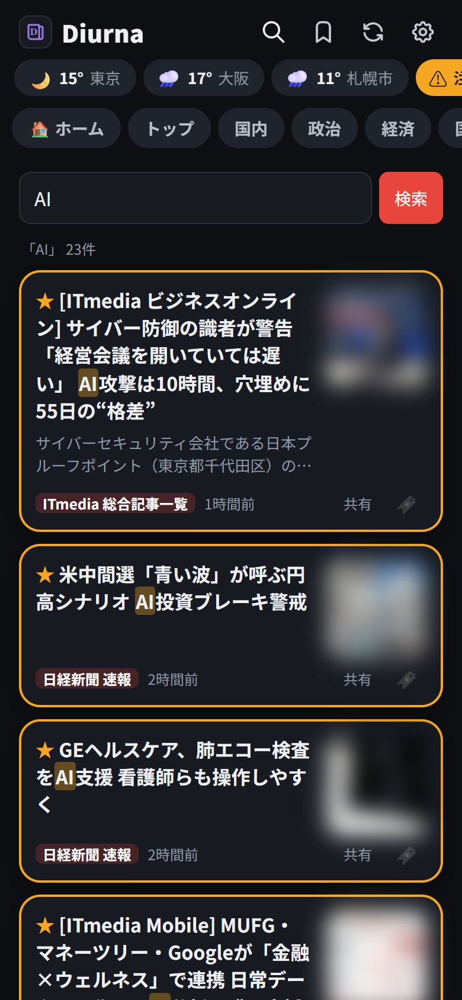
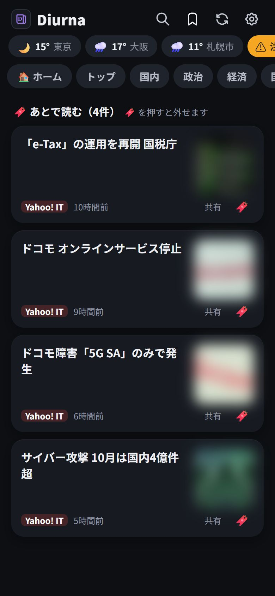
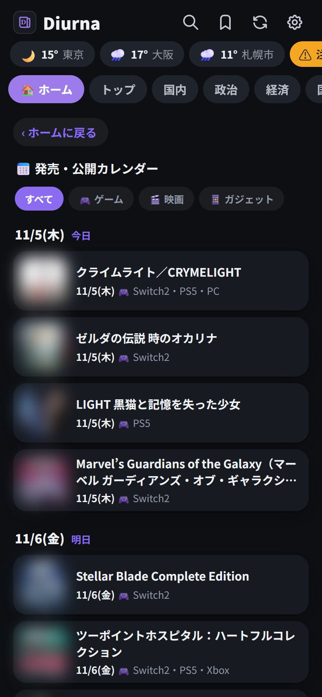
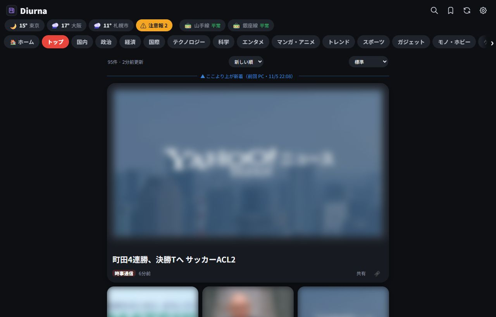
右上の ⚙︎ で設定を開きます。変えたら、上の「保存」を押してください（お知らせメールのスイッチなど、押した瞬間に変わるものもあります）。設定は、デザインと文字の大きさ以外は PC とスマホで共通です。
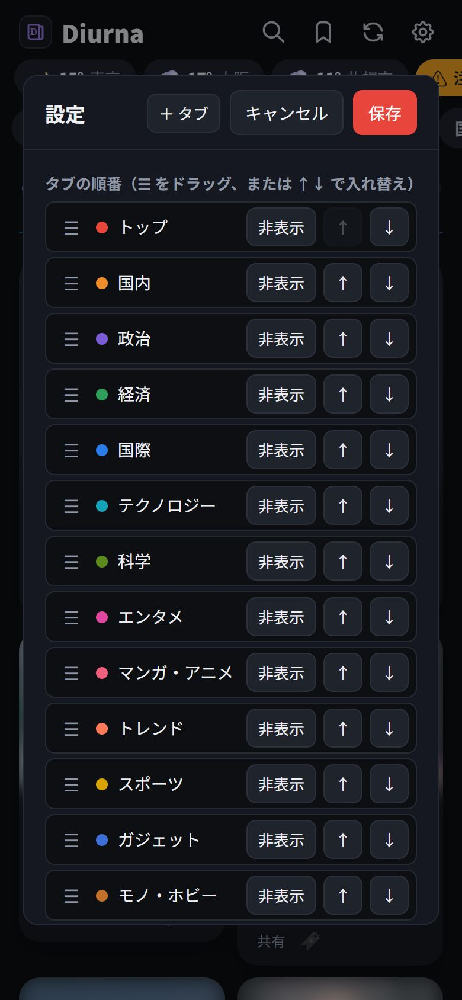
「＋タブ」でタブを追加。☰ のドラッグか ↑↓ で並べ替え、使わないタブは「非表示」。タブの中身には、ニュースサイトや YouTube のチャンネルのアドレスを入れるだけで記事が取れます（✓／✗ で取れるか分かります）。
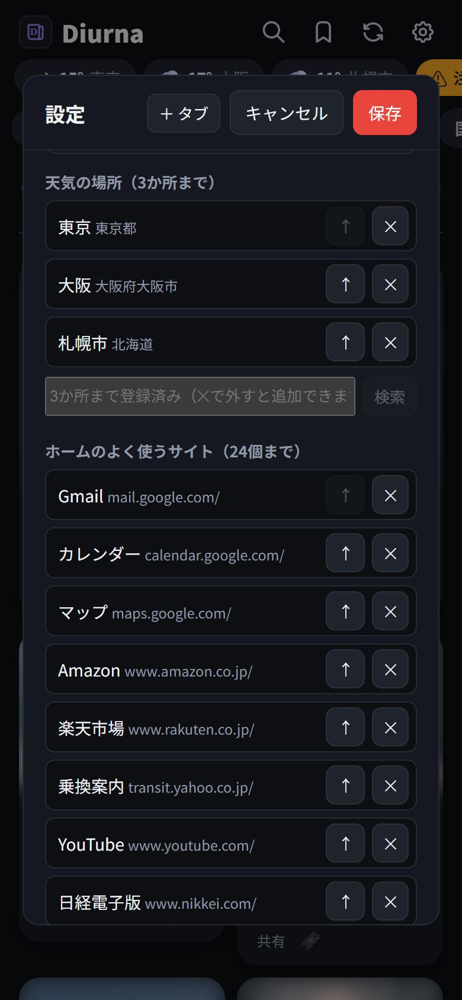
地名で検索して、候補を押すと追加。天気は3か所、路線は3つまで。1か所目がホームの天気になります。
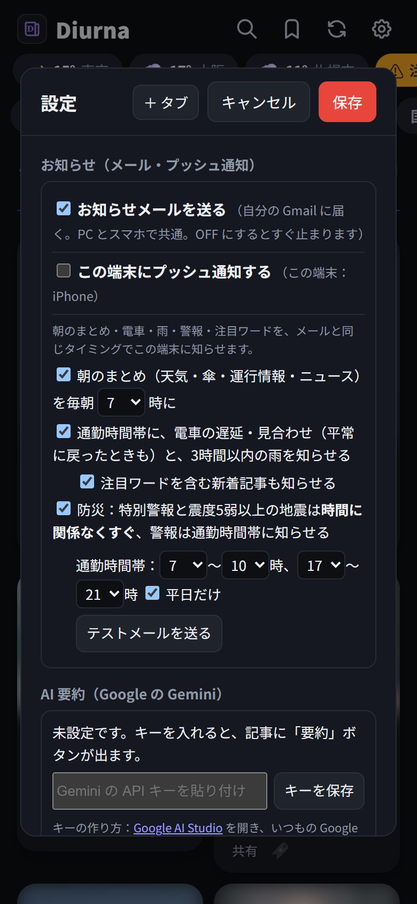
朝のまとめ・通勤時間帯の電車の遅れと雨・警報・注目ワードの新着を知らせます。メールは全端末で共通の1つのスイッチ、プッシュ通知は端末ごとに ON／OFF。「テスト通知」で届くか確かめられます。
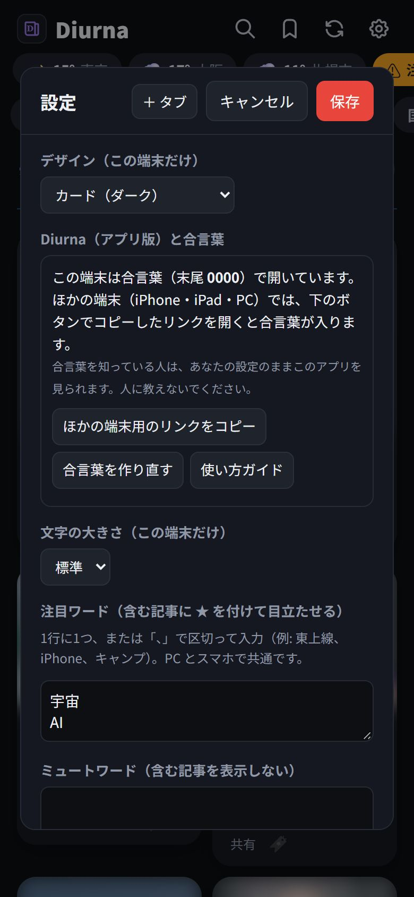
デザインは「標準」と「カード（ダーク）」。注目ワードを含む記事は ★ で目立たせ、ミュートワードを含む記事は出しません。
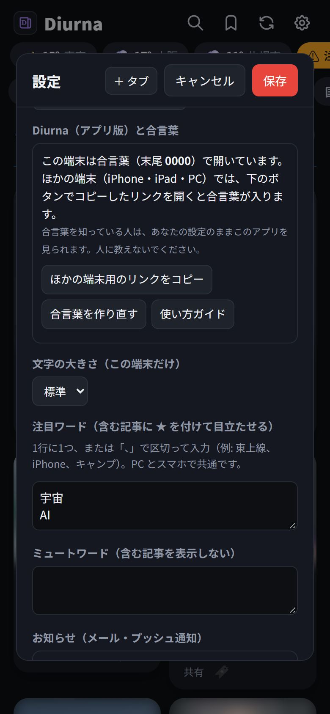
ほかの端末用のリンクのコピーと、合言葉の作り直し。このガイドもここから開けます。
Google の Gemini の API キー（無料枠あり）を入れると、記事の「要約」ボタンと、ホームの AI 今日のまとめが使えます。キーは Google AI Studio で作れます。
困ったときは、まずここを見てください。
メールとプッシュ通知の両方が ON か、Edge と Chrome など2つのアプリでプッシュ通知を ON にしているためです。いらない方を OFF にしてください。
記事のページに代表の写真がないときや、Google ニュース経由で取っているサイトでは、写真が出ないことがあります。
天気は Open-Meteo、警報・地震・台風は気象庁、運行情報は Yahoo!路線情報、話題のキーワードは Google トレンド、よく読まれている記事は Yahoo!ニュースから取っています。それぞれの公式の情報もあわせて確認してください。
古代ローマで毎日掲示された官報「Acta Diurna（アクタ・ディウルナ）」から取りました。ラテン語で「毎日の」という意味で、世界で最初の新聞とも言われます。アイコンは、新聞と頭文字の D です。